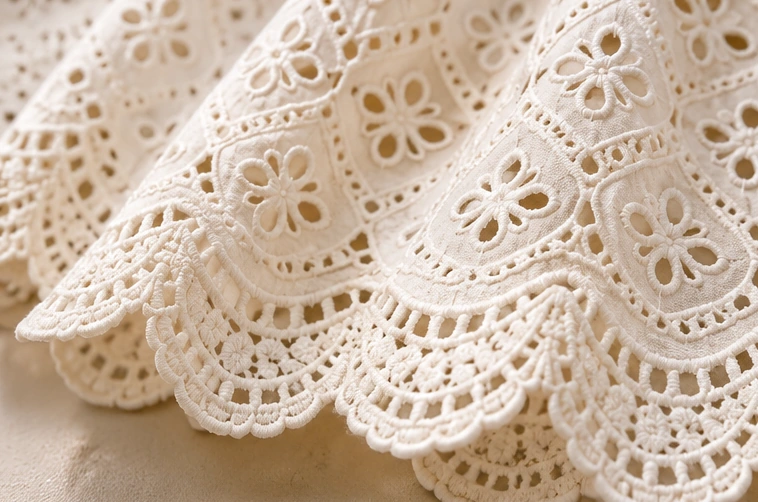
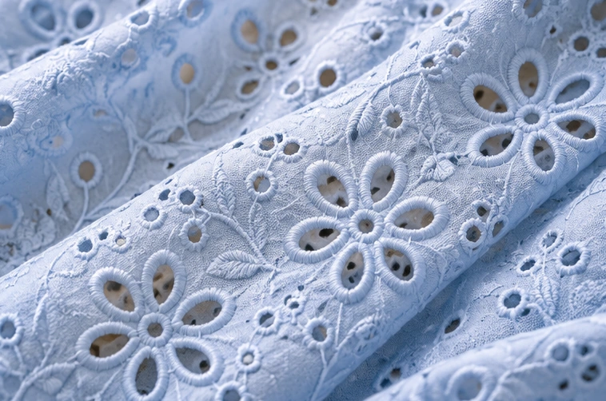

Cotton.
Schiffli.
Crafted for
the World.
Manufacturer & exporter of premium women's western wear — crafted in cotton, Schiffli, embroidery, eyelet and printed fabrics for global wholesale buyers.
3D Dress StudioRotate the garment ↗ 03 / OUR STORYAbout
ManishaMeet the manufacturer ↗ 04 / PRODUCT RANGEExplore all
collectionsSeven product categories ↗ 05 / HOW WE WORKOur
manufacturingFrom fabric to finished apparel ↗
Contemporary
Women's Wear
Versatile, breathable and trend-driven collections in cotton, Schiffli, embroidered and printed fabrics.
View All Collections →


From Fabric
to Finished Apparel
A fully-equipped manufacturing unit in Noida, India, supporting product development and production for international buyers.
Explore Manufacturing →


Schiffli.
Made to be noticed.
Explore eyelet, cutwork and embroidered cotton fabrics for distinctive dresses, tops and coordinated collections.
Explore Schiffli Styles →Texture you can
almost feel.
From intricate floral eyelets to scalloped borders and soft embroidered surfaces, explore the textile details that bring a collection to life.
Explore fabrics & craftsmanship ↗

A better way
to build together.
Share a style reference, tech pack or early idea. Align on fabric, construction, quantities and destination market before the next stage of development.
Explore the buyer process ↗ FROM BRIEF TO BUYER-READY ↗
FROM BRIEF TO BUYER-READY ↗